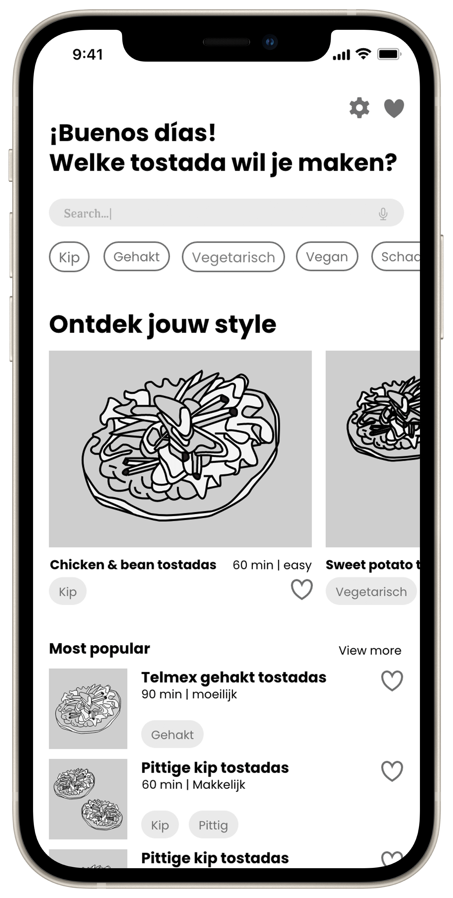
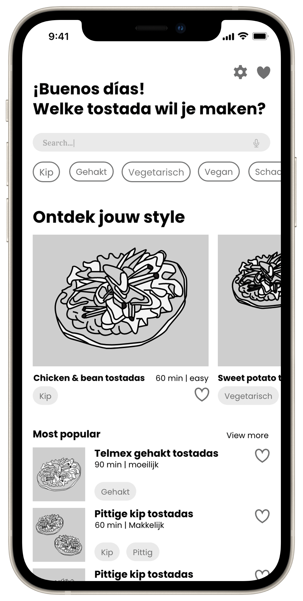

Tostada Cooking app
February 2023

The challenge
The goal of this 4-person group project was to design an app solely based on a tostada recipe for users between 40 and 60 years old. The main focus was to make an easy-to-use app that's unique to the tostada recipe.


Iterate, test, iterate.
In order to make sure we designed a usable app, we had to test and iterate. We started with a low fidelity paper prototype, enhanced it to a medium fidelity digital prototype and ended up with our final HiFi prototype. Every team member executed two user-tests with the LoFi and MeFi prototype in order to obtain useful feedback and test results that were used to improve the design.
 

Testing the design
In order to execute a useful user test, I set up a testing plan, containing various questions and tasks for the user. In the testing scenarios, I made sure not to dictate instructions for the user. Instead I explained a situation to the user and observed what the user thought what they were supposed to do.
The result
During this project, I learned to work together with other teammates to create a great design for a mobile app. A clear division of tasks and clear communication was critical in order to finish this project in three weeks. I also learned how to test our design by user testing and how to draw up a useful test plan. I used all these skills to create a beautiful recipe app.